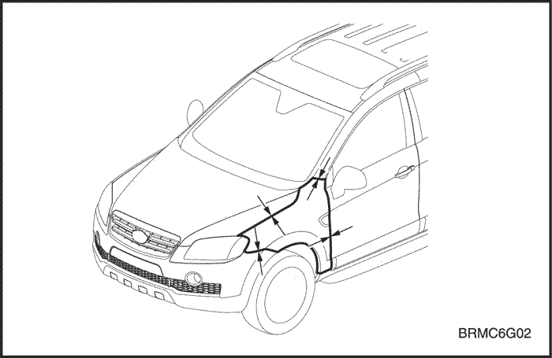
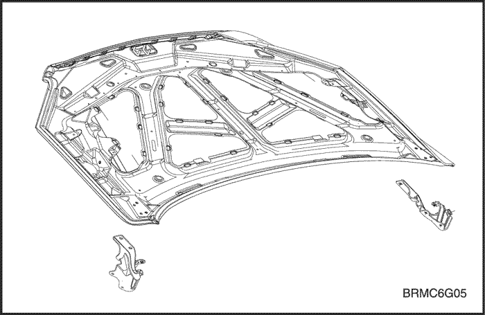
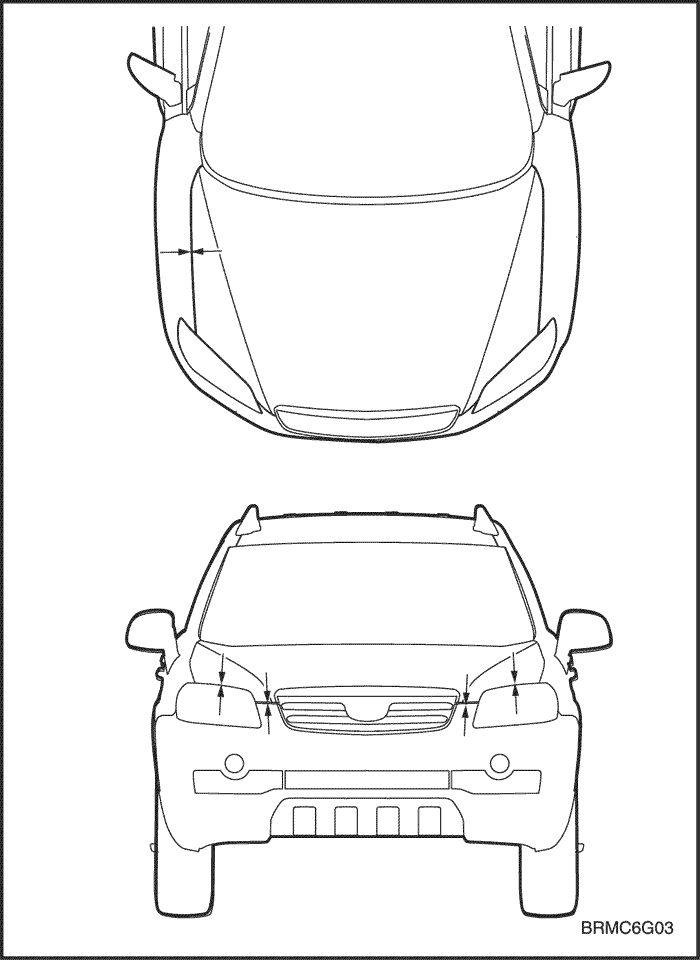
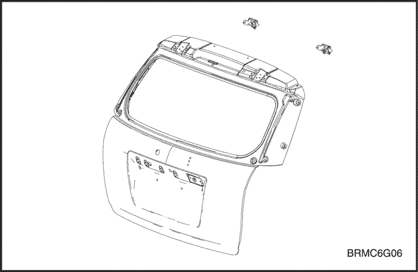
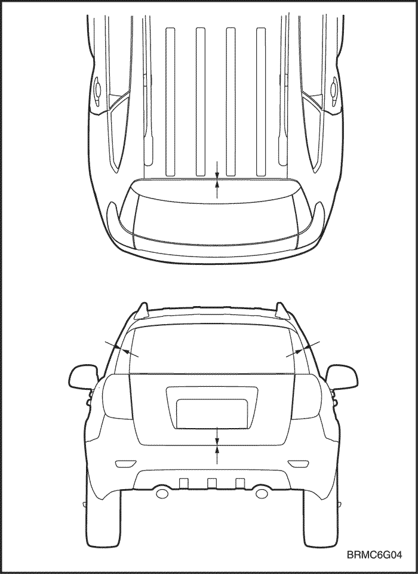

КРЫЛО, КАПОТ, ЗАДНЯЯ ДВЕРЬ И КРЫШКА БАГАЖНИКА
КРЫЛО
ПРОЦЕДУРА РЕМОНТА
- Снять соответствующие части.
- Передний бампер и грязезащитный щиток.
- Снимите крыло
- Подготовьте новое крыло.
- Подготовьте новое крыло и проверьте поврежденные места.
- Нанесите краску.
- ПРЕДОСТОРОЖНОСТЬ
- При нанесении лакокрасочных покрытий обеспечьте вентиляцию. Большинство лакокрасочных материалов содержат вредные при вдыхании или проглатывании вещества. Прежде чем открывать емкость с лакокрасочным материалом, прочесть этикетку.
- Избегать контакта с кожей. При окраске использовать респиратор установленного образца, перчатки, средства защиты глаз и соответствующую одежду.
- Лакокрасочные материалы огнеопасны. Храните их в безопасном месте, берегите от искр и огня, не курите.
- Нанесите герметик.
- Нанесите герметик на крепежные болты.
- Предварительно установите крыло.
- Прикрепите к колесной арке болтами в двух местах. Закройте багажник и проверьте спереди и сзади зазоры и разницу уровней багажника и двери.
- Полностью затяните крепеж.
- После проверки и регулировки положения установки полностью затяните все болты.
- Установите соответствующие детали.
- Установка производится в порядке, обратном снятию.
- Проверьте зазоры
- Проверьте зазоры переднего бампера.




КАПОТ
ПРОЦЕДУРА РЕМОНТА
- Снимите соответствующие части.
- Снимите капот.
- Удалите болты крепления капота к двум петлям капота.
- Подготовьте новый капот.
- Подготовьте новый капот и проверьте поврежденные места.
- Нанесите краску.
- ПРЕДОСТОРОЖНОСТЬ
- При нанесении лакокрасочных покрытий обеспечьте вентиляцию. Большинство лакокрасочных материалов содержат вредные при вдыхании или проглатывании вещества.
- Прежде чем открывать емкость с лакокрасочным материалом, прочтите этикетку.
- Избегайте контакта с кожей. При окраске используйте респиратор установленного образца, перчатки, средства защиты глаз и соответствующую одежду.
- Лакокрасочные материалы огнеопасны. Храните их в безопасном месте, берегите от искр и огня, не курите.
- Предварительно установите капот.
- Аккуратно прикрепите петли капота в двух местах четырьмя болтами.
- Закрыть капот и проверить спереди и сзади зазоры и разницу уровней капота, крыла и фар.
- Полностью затяните крепеж.
- После проверки и регулировки положения установки полностью затяните все болты.
- Установите соответствующие детали.
- Установка производится в порядке, обратном снятию.
- Проверка и регулировка.
- Проверьте зазоры и различия уровней.
- Проверьте открывание и закрывание замка капота.




ЗАДНЯЯ ДВЕРЬ
ПРОЦЕДУРА РЕМОНТА
- Снимите соответствующие части.
- Жгут проводов.
- Задний стеклоочиститель и мотор.
- Стекло заднего окна.
- Узел замка, защелка и др.
- Снять заднюю дверь.
- Удалить болты крепления задней двери к двум петлям.
- Подготовить новую заднюю дверь.
- Подготовить новую заднюю дверь и проверить поврежденные места.
- Нанесите краску.
- ПРЕДОСТОРОЖНОСТЬ
- При нанесении лакокрасочных покрытий обеспечьте вентиляцию. Большинство лакокрасочных материалов содержат вредные при вдыхании или проглатывании вещества.
- Избегайте контакта с кожей. При окраске использовать респиратор установленного образца, перчатки, средства защиты глаз и соответствующую одежду.
- Лакокрасочные материалы огнеопасны. Храните их в безопасном месте, берегите от искр и огня, не курите.
- Предварительно установить заднюю дверь.
- Аккуратно прикрепить петли задней двери в двух местах четырьмя болтами.
- Установите бампер.
- Закрыть заднюю дверь и проверить зазоры и разницу уровней задней двери, наружных панелей боковин и задних комбинированных фонарей.
- Полностью затяните крепеж.
- После проверки и регулировки положения установки полностью затяните все болты.
- Установите соответствующие детали.
- Жгут проводов и электромагнитный клапан.
- Узел замка, защелки и тяги.
- Установить стекло заднего окна.
- Установка производится в порядке, обратном снятию.
- Проверка и регулировка.
- Очистить багажник.
- Проверьте зазоры и различия уровней.
- Проверить открывание и закрывание замка багажника.
- Осмотреть багажник на предмет протечек.
- Проверить работу системы предотвращения запотевания заднего стекла.


